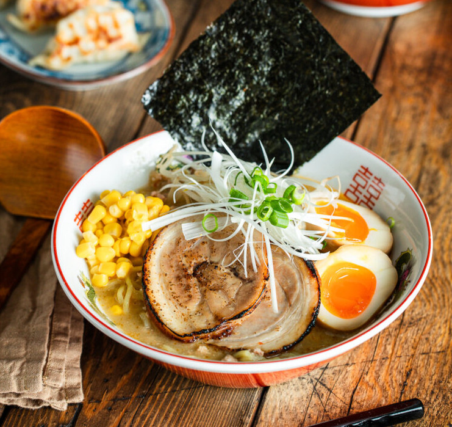

Miso Ramen

Miso ramen is a rich and comforting Japanese noodle soup from Hokkaido, known for its creamy, umami-packed miso broth. It features fresh ramen noodles, aromatic sautéed base, and classic toppings like chashu pork, corn, soft-boiled egg, and green onions—perfect for a cozy meal.
Ingredients
- Fresh ramen noodles (or dried, about 150-200g per serving)
- Dark roasted sesame oil (or neutral oil + extra sesame for aroma)
- Garlic cloves (2-3, minced), fresh ginger (1 tsp grated), and shallot or onion (1/2, minced)
- Ground pork or chicken (100-150g, for the base; optional mushrooms for vegetarian)
- Doubanjiang or chili bean paste (1-2 tsp, optional for mild spiciness)
- Miso paste (white/red blend, 3-4 tbsp – adjust to taste)
- Chicken or pork stock (about 600-800ml per serving)
- Toasted white sesame seeds (for garnish)
Steps
- Prep ingredients: Mince garlic, ginger, and shallot. Toast sesame seeds lightly if not already toasted. Prepare toppings (e.g., halve soft-boiled eggs, slice green onions).
- Make the tare/base: Heat sesame oil in a pot over medium heat. Sauté garlic, ginger, shallot, and ground pork until the meat is browned and fragrant (about 4-5 minutes). Stir in doubanjiang if using for extra depth.
- Build the broth: Pour in the stock and bring to a gentle boil. Reduce heat to low, then whisk in the miso paste gradually (dissolve it first in a ladle of hot broth to prevent clumps). Simmer 5-10 minutes to develop flavor—taste and adjust seasoning (add more miso or a splash of soy if needed). Keep warm.
- Cook the noodles: In a separate pot, boil fresh ramen noodles according to package instructions (usually 2-4 minutes for al dente). Drain well and divide into serving bowls.
Back to main menu